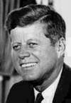
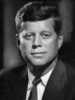

Positive Atheism's Big List of
John F Kennedy
Quotations
about the Separation of Religion from Government
• No-Frames Quotes Index
• Load This File With Frames Index
• Home to Positive Atheism
Whatever one's religion in his private life may be, for the officeholder, nothing takes precedence over his oath to uphold the Constitution and all its parts -- including the First Amendment and the strict separation of church and state. If my church attempted to influence me in a way which was improper or which affected adversely my responsibilities as a public servant sworn to uphold the Constitution, then I would reply to them that this was an improper action on their part. It was one to which I could not subscribe. We do not want an official state church. If ninety-nine percent of the population were Catholics, I would still be opposed to it. I do not want civil power combined with religious power. I want to make it clear that I am committed as a matter of deep personal conviction to separation. I am flatly opposed to appointment of an ambassador to the Vatican. Whatever advantages it might have in Rome -- and I'm not convinced of these -- they would be more than offset by the divisive effect at home. It is my firm belief that there should be separation of church and state as we understand it in the United States -- that is, that both church and state should be free to operate, without interference from each other in their respective areas of jurisdiction. We live in a liberal, democratic society which embraces wide varieties of belief and disbelief. There is no doubt in my mind that the pluralism which has developed under our Constitution, providing as it does a framework within which diverse opinions can exist side by side and by their interaction enrich the whole, is the most ideal system yet devised by man. I cannot conceive of a set of circumstances which would lead me to a different conclusion. Voters are more than Catholics, Protestants or Jews. They make up their minds for many diverse reasons, good and bad. To submit the candidates to a religious test is unfair enough -- to apply it to the voters is divisive, degrading and wholly unwarranted. I believe the American people are more concerned with a man's views and abilities than with the church to which he belongs. I believe the founding fathers meant it when they provided in Article VI of the Constitution that there should be no religious test for public office. And I believe that the American people mean to adhere to those principles today. [Excerpt]: [Passage]: I would not look with favor upon a President working to subvert the First Amendment's guarantees of religious liberty ... Neither do I look with favor upon those who would work to subvert Article VI of the Constitution by requiring a religious test -- even by indirection. [Excerpt]: [Passage]: The great enemy of the truth is very often not the lie -- deliberate, contrived and dishonest -- but the myth -- persistent, persuasive and unrealistic. We are not afraid to entrust the American people with unpleasent facts, foreign ideas, alien philosophies, and competitive values. For a nation that is afraid to let its people judge the truth and falsehood in an open market is a nation that is afraid of its people. Menendez: Kennedy Revitalized Pluralism "The significance of the Kennedy Presidency as far as cultural pluralism is concerned is that it reaffirmed and revitalized the pluralist impulse and led to major accommodations between religious groups. JFK was a free man. By being free, he freed many Catholics and Protestants from the debilitating recriminations of the past." |
The Subtle Fulmination of the Encircled Sea Please Feel Free Grab some quotes to embellish your web site, Use them to introduce the chapters of a book or Poster your wall! Graffiti your (own) fence. That's what this list is for! In using this resource, however, keep in mind that If you decide to build your own online
There's something to be said | |||||||||||